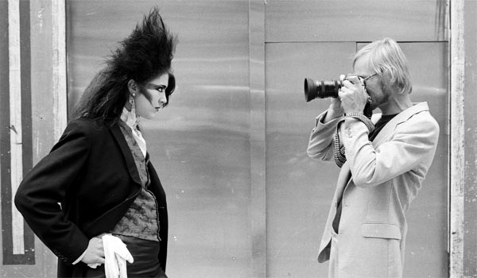
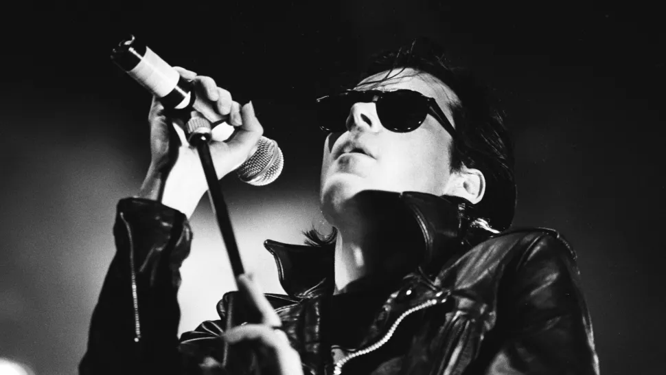

Moda gótica é reconhecida pelo seu vestuário preto. Ted Polhemus descreveu a moda gótica como uma "profusão de veludos pretos, rendas, meia arrastão e couro tingido de purpura ou roxo, firmemente espartilhos atados, luvas, precárias jolas ou simbolos retratando religiosidade. temas filosóficos ou ocultistas".O pesquisador Maxim W. Furek observou que: gótico é uma revolta contra a maré da moda dos anos 1970: a discoteca era um protesto contra o colorido pastel e a extravagância dos anos 1980. O cabelo preto, roupas escuras e palidez fornece a aparência básica do gótico.
Estilo gótico ou moda gótica é um estilo de roupas marcado por cores escuras, misteriosas e acessórios homogêneos. Ela é usada pelos adeptos e entusiastas da subcultura gótica. O estilo das vestimentas são geralmente mórbidos e sombrios. O típico estereótipo do estilo gótico inclui um rosto pálido com cabelos pretos (coloridos ou não), batons e roupas pretas,embora nem sempre estas descrições sejam de fato o estereótipo padrao. Homens e mulheres góticos vestem tanto delineador e esmalte de unha escuro. Os estilos são muitas vezes emprestado da moda punk, glam, vitoriana e elizabetano.
Robert Smith, Musidora, Bela Lugosi, Bettie Page, Vampira, Morticia Addams, Elvira, Nico, Rozz Williams, David Bowie, Lux Interior, Patricia Morrison e Dave Vanian também são considerados ícones do estilo. Nos anos 80 surgiram designers como Drew Bernstein, da Lip Service, enquanto nos anos 90 surgiria uma onda de estilistas góticos dos Estados Unidos
